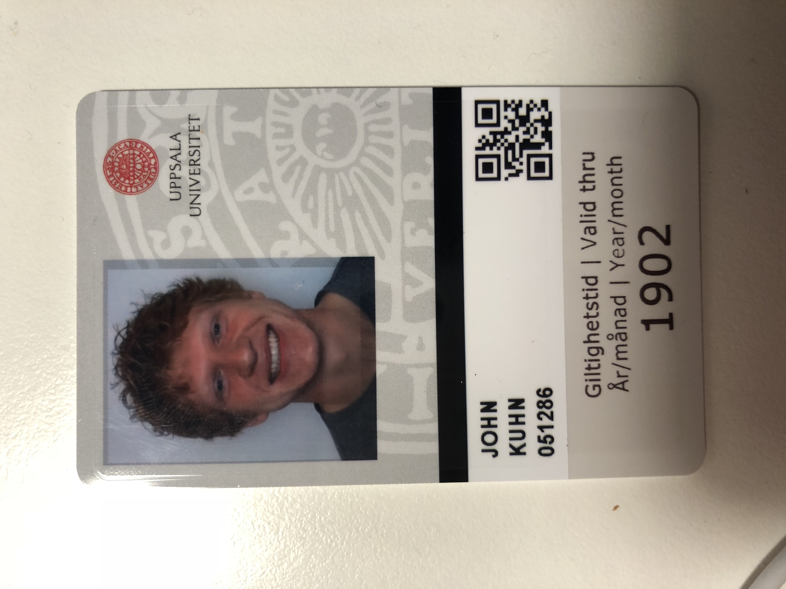

Hej!
Welcome to John Kuhn's study abroad blog. This is simply to answer some of the questions
my family and friends constantly have about my trip. It also serves as a chance for me to go back
and reflect on my trip when my trip concludes, and I begin to start forgetting about the funnier
day to day events. I'm actively posting articles, so feel free to check back regularly.
The 18th marks my first day in Sweden. I had just spent around 13 hours traveling from O'Hare airport
to Arlanda in Sweden. Being as I couldn't get into my Uppsala apartment until Monday,
I spent the weekend in Stockholm which was just a 20 min train ride away.
The picture above is a photo I took almost immediately after I got off my plane after landing at Arlanda.
I had only received about 90 mins of sleep on the seven hour flight, and I certainly wouldn't describe it
as good sleep as the sleep came in irregular twenty minute intervals. I did enjoy that the plane had episodes
of "Nathan for You" to watch. I ended up watching all four of the available episodes. After getting off
the plane, getting my luggage, and asking someone about how to get to Stockholm, I was finally on a train
towards Stockholm. My first impression of Sweden is the green scenery. Lots of trees and green. The usual
corn and soybean fields I was used to seeing in Indiana were replaced by plains of green grass.
Once I had finally arrived in Stockholm it was around 7am, which was a late 1am at home. While I was tired
from traveling the past day and was wanting to rest, I needed to find a hotel to stay. Using google maps, I
lugged my luggage up the cobblestone roads looking for a hotel. I ended up stopping at three different
hotels all of which were full due to a festival being in town. After the third hotel, I booked a room at the
Sheraton online on my phone and hailed an Über. I could've walked to the Sheraton as I had to the others,
but I was already sweating like crazy and didn't want to look any more out of place then I already knew I did.
As a side note, it was 65 degrees or so with a slight breeze which ended up being heavenly once I started
sweating, so it certainly could've been worse.
My room was super nice and featured a US outlet and a king size bed, which I would eventually pass out on
around 1pm for a three hour nap. My first meal in Stockholm was at a place called Max, which is probably
the Swedish equivalent of McDonalds. It was a pretty good burger with nothing unexpected. The Coke I had
ordered was just a slightly different taste than I was used to. The Coke in Stockholm had a slightly stronger
aftertaste; the pop was a bit more bitter than the U.S. version.
Pretty much everyone in Sweden speaks perfect English, and I never had any trouble navigating around the
city or talking to people. The English I hear in Sweden is even better than some of my professors at home,
but to be fair the Swedes have been learning English since elementary school.
Today was a good day because I was able to get 10,000 steps in before noon just walking around exploring
the city. I was also able to meet up with some other Purdue students. These students were studying as
exchange students at the Swedish Royal Institute KTH in Stockholm. I was able to meet up with them at
a barbecue their school was having for their arriving international students. I was worried I wouldn't
be able to enter because I didn't have the wristband denoting a KTH international student, but it worked
out because they let me in anyway. This barbecue had Germans, Austrians, Spaniards, you name it. I was
able to talk with a couple Catalans from Madrid that spoke really good English. It was great because
although everyone was from different countries, they all spoke in English to each other. English is the
universal language everyone is learning, especially if you're an engineering student in Europe.
I was able to end my day hanging out with those Purdue students and an Austrian student we had met.
We went out and got a drink at a place we had found on an app that displayed bars with beers under 30
krona, which is like $3.30. It was my very first time in a bar as I'm only 20 and that doesn't fly in
the U.S.; however, the Europeans didn't even check my ID. Different cultures are great.
Today was my first day to Uppsala. I was staying in the Sheraton downtown Stockholm for the weekend
and needed to checkout by noon that day. I was on a bit of a schedule because I had to make it to
my apartment building while it was still open from 13:00 - 16:00. As my luck had it, the moment I
found my train, the doors closed on me like a movie. There was a woman there who was super nice and
told me the next train to Uppsala was coming in a half hour. About a $10 mistake for being just 30
seconds late, but no harm no foul.
I went ahead and bought the next train's tickets on my phone which went fine, expect that it never
emailed me my ticket, just a credit card confirmation. I downloaded the SJ app for Swedish trains and
tried to download my ticket there, but all I could get was the ticket for the last train. Now I worried
about not having a ticket and boarding the train, and the idea of presenting the old ticket crossed my
mind. They let me on without having to show my ticket, but I knew they would be sending a guy to come
check the ticket I didn't have. Keep in mind, everything on the app was totally in Swedish, and I was
still attempting to download my ticket on my phone. Sure enough, here comes the ticket checking guy. I
was able to explain my situation in English, which he understood, and I showed him my purchase number
which was good enough for him, so it all worked out, as most things do. Really there's no reason to worry
ever. Even had I been arrested for not paying my ticket, I could've appeared on that TV show "Locked Up
Abroad", maybe even received a book deal too.
Uppsala ended up being a great choice as the city is even more beautiful than Stockholm was, and it has
tons of people outdoors with their dogs or on their bikes. In fact, it reminded me about a conversation
I had with a Swedish professor on my plane rider over. She said there's a running joke that every Swedish
student puts "love being outdoors" for the hobbies section on their resumes. The picture I posted for this
entry is actually a castle built in 1549, super old. Uppsala University is super old too, founded in 1477
makes it the oldest university in Scandinavia and fourth oldest in all of Europe.
I successfully got into my apartment and got settled in. Only one other person that I can tell is moved
in on my hall. Unlike the KTH students I had met over the weekend, most Uppsala students are waiting to
arrive for another week because classes don't start for another two.
After three daily articles in a row, this newest one is coming as a recap of the last several days. My
first few days in Sweden were spent mostly by myself as I arrived very early compared to most students
whom are now finally trickling in. During those first days, despite the pace of travel and the business of
finding my way around, there we're plenty of lulls and downtime to write blog posts. It seems when fun
things begin to actually happen, the blog posts get pushed by the wayside. It's most likely the days I
have time to write blog posts are the boring days of reflection on my interesting moments the days before.
One of my favorite comedians Mitch Hedberg had a joke where his buddy said to him, "hey come look at
this picture of me when I was younger", to which Mitch replied, "every picture is of you when you
were younger". In the same way, a blog post is a documentation of past events.
I don't know how philosophic I want these posts to be. I'm not sure if people will read and enjoy my
thoughts, and I'm not sure what they want to get out of it. Do artists care about their audience base, or do they just
paint or play? Maybe the art is therapeutic to them and wasn't meant to be consumed. I'm sure there are
plenty of artists throughout history that required therapy through art, and I'm sure we know their names
because of the intense emotions they put into their work. My favorite musician Kurt Cobain certainly
didn't mind if people listened to him or not. In fact, he hated being famous and how superficial his
relationships became. He was one of the greatest singers because he had this quality called "release".
He could yell without yelling and push his voice without fear. Most all singers hit a glass ceiling
because they are trying to contain their voice or control it. In the same way, I guess I should write
thoughts as they come and as fearlessly as I can, trying my best to maintain a voice without reserving myself
and creating a glass ceiling.
The last few days while mostly boring and uneventful, I had some good moments. I was able to finish some
code for a project I'm working on with another Purdue student and begin getting our app tested and into
user's hands. I met my buddy group leader, as well as some floor mates who later met me for dinner at
a local pub. The pub, although being totally Swedish, had amazing chicken wings. I know nothing of
Sweden or if they typically make chicken wings, but I did notice the local McDonald's sold chicken
wings, unlike the United States. So maybe the Swedes enjoy chicken more than we do. If that's the case
great, I love me some wings.
There's a common rule when meeting people that goes something like you should never bring up politics
or religion ever ever ever. Well, all of my meetings with people over food have gotten into the realm
of politics, religion, or both. I'm having a hard time deciding if it is coincidental or not. I myself
love reading about politics and would say I keep myself in the loop pretty well and can keep up with most
all things politics. Maybe I'm driving conversations towards politics, but maybe as international students
we're very inquisitive of the other person's culture and state, which naturally leads into the realm of
politics. Either way, I hope this trend continues. What a bad thing to repress political conversation,
in the name of courteousness. The way I see it, you should be changing your mind about something about
every year of your life. To think you have all the correct thoughts as a 20 something is insane, and
not talking to people about your beliefs is how you keep them forever and never challenge them. Talking,
questioning, and challenging (usually) exposes the best ideas. If your thoughts didn't stand up, great, because
now you just kicked something stupid you would've held onto for potentially a long time. The alternative
is even better, the ability to help someone else along and show them the way out of bad logic or what
have you.
I'll finish with this thought. We should strive to have "release" in all we do. Take it from Walt Disney,
"Be who you are and say what you feel because those who mind don't matter and those who matter don't mind."
I'm thinking about what I'm going to write this post about, and then I see that I had written "August 24st"
like an idiot on my last post heading to no correction for 5 days. You want people to read your blog but
after a mistake like that, you hope no one is reading your blog.
Today was a little slow to start but a good day nonetheless. I was able to enjoy a welcome ceremony from Uppsala
University for its international population, which was a little boring but interesting too. I was able to
learn a good bit about the history of the "Nations" here at Uppsala as well as the founding history of the
University. Uppsala is actually the oldest University in Scandinavia founded in 1477 and one of the oldest
in all of Europe. The interesting parts of the history lesson revolved around the Student Nations. Back in
the 19th century when students would come to study, the time required to get back to Stockholm as an example
was 2 days if the weather permitted, sometimes the trek took as much as 5. For a comparison, I was able to
take a train ride to Stockholm from Uppsala that lasted a half hour. In the 1800's, a student coming to study
at Uppsala was so much more disconnected from their family than a college student today. To compensate, the
Student Nations were founded and represented each of the regions in Sweden such that someone could keep up
with their communities at home. They were able to meet with people from their town, receive their local news
through their Nation, and when one of the members made the trip back home, they would deliver mail to the other
members' family.
Today, the Nations are still around, but are not based on the localities of Sweden from which you're from, and
many international students join them. They are unlike Greek housing in the US however because the Nations are
for both sexes, and no one lives at the nations. Most have their own pubs and libraries as well. Joining a Nation
means you can hop around to all the other Nations, so joining one isn't as big a decision as picking a Greek house
which is the one and only you'll be a part of. Having that Nation card at Uppsala that comes from joining a Nation
gets you into all the others. I was able to join Gästrike-Hälsinge Nation yesterday afternoon because they had
hosted a couple of fun events I had already been too, and I didn't want to worry about getting a Nation card
anymore.
Beyond joining a Nation and hearing about Uppsala history, I was able to practice my Spanish last night as well
as today. Do you remember the ice breaker question, "what super power would you want in real life"? The classic
answers are flight, x-ray vision, the ability to teleport. None of those answers would give you the freedom the
super power of speaking every language would allow. I took Spanish for 3 years in high school and again for a
semester in college. I was good. Just after a year of not speaking it, I was horrible at conversing with native
speakers. To be able to just speak any language perfectly with no effort would allow you a freedom to travel,
meet, relate, and engage with people in a way only a few can now. One of the perks that enticed me, not enough
to fully commit to applying, about the CIA data science position I had a chance to apply for, was that they would
adjust your salary based on how many languages you were fluent in. Not only that, but they would pay to have a
tutor maintain those languages such that you wouldn't lose them. I would use that in a heartbeat as I'm passively
losing my Spanish as it is, and need to learn Swedish. Then again English is the Universal language and everyone
I meet, be they from Asia or Europe, they all speak English. So maybe I shouldn't feel bad for not having another
language when my native tongue is the universal one, and I don't have the dire need to learn that others have.
Above is a video of my very first backflip in Sweden. Not bad after not having done it in about 2 weeks. One
of the guys in my buddy group was a competitive diver all the way up to the collegiate level, and he was
able to give some pointers on my backflip.
Well, when I go back and recount today's events, all I will remember is the half an hour discussion I had on
feminism with a gender studies student. I won't get into the conversation at all, but there were a lot of
disagreements. I wasn't offended at any point, but I kept feeling like she was upset with things I had to
say. I feel like I'm a nice guy. I certainly don't go out of my way to try and offend people or attack their
beliefs, but I want to know why people believe what they believe. If I am wrong on an issue, I want to know
why and be corrected; however, to get to a point where I am able to understand their level of thinking, I
have to risk being offensive. I have to probe and ask about things they may take for granted as obvious.
I hope I can still be friends with her.

I also was able to get my Uppsala University student ID card today, and I feel like a true Swedish student
now. The people who took my picture actually said I was the happiest looking student they had seen on an
ID photo. My class schedule is pretty relaxed with just 3-4 classes a week depending on the week, so I
should have plenty of time to travel to a few places in Europe while everything is close. I definitely
want to go to Florence, Amsterdam, and Copenhagen, but I also want to go with friends instead of being
all by my lonesome. I have made several very quick friends here in Uppsala as almost all the exchange
students are super friendly, outgoing, and optimistic. Getting to all of those places with the friends
I've met might require me to organize the trips and ask them to join. I'll get on that soon!
As it happens, I had a chance to practice my Spanish some more today with some Spaniards. It might
actually be pretty funny to come back from Sweden after a semester of study reporting that I'm
fluent in Spanish instead of Swedish.
Today was my first day of school in Uppsala Universitet. Before my class began at 10:15 am, I was hoping to
get a good night sleep for my first day. I had passed out around 1 am and was sleeping super well. Then
my phone started buzzing, because someone was calling me. It was 2:40 in the morning, so I ignored it.
After the fifth call, I decided to answer. It wasn't all
bad though because it was a friend from Purdue who was also studying abroad. She was planning a trip
this weekend to Naples Italy and wanted to include me, but that also meant I had to agree to the purchasing
of plane tickets etc. Certainly a good reason for having been woken up, but after organizing final trip
details, it was hard to fall back asleep.
I ended up watching Archer on Netflix until about 4 am when my sister texted me and asked me to get off.
For those who don't know, if you're poor and have the cheapest Netflix plan, only one user on the account
may view content at one time, ergo my sister wanted me off so she could watch her shows. Ah yes, the first
text I've received from sister abroad was about me getting off Netflix. Man, I usually don't have an
issue falling asleep, but last night was a bear. I even used the trick that almost never fails; I play
Jim Gaffigan on Spotify. Don't ask me why, but his soothing soft voice always puts me to sleep, except
for last night.
I woke up in plenty of time for getting to my class; however, my bike's rear tire went flat not two
minutes after I left my dorm, turning my fifteen minute trip to class into a twenty-five minute one. It also
meant me being late to class for my first day. Something you may not think about or notice, but when
one of your bike tires goes completely pancake on you, the energy required to keep the bike going
almost doubles. Couple the extra exertion with the nerves of being late, and I ended up coming to lecture
super sweaty, probably looking like I had just run to class. I say these things simply because they
happened, not because any of them were really a big deal.
This post is defiantly not as philosophic as the others, it's just about what I did.
I bought a Swedish phone plan today and also got a haircut. Oh my goodness, I needed
a haircut so bad. My hair hadn't been cut since probably June and it was an afro as far as I'm concerned.
The phone plan was a relief as well because it includes data roaming outside of Sweden for travel.
Everything on this journey abroad so far has just been a matter of getting more comfortable. The first
day you're here it's awkward because you don't know anyone or where you're supposed to go for things, or even
how the outlets work. But after solving simple problems every day you start to feel pretty comfortable. I felt pretty
comfortable after I figured out my classes and my schedule, and once I got a bike. Before I had a bike,
getting to town was a forty-minute walk. My next step towards more comfortability would be getting good
at ordering food in Swedish. Swedish isn't that hard grammatically or anything that I can tell, but the
pronunciation is what's hard. It's like English in that there's not a lot of phonetic rules that are
adhered to. Anyways I would pretty pleased if I could order in Swedish and have basic conversations with
strangers.
I actually was told a joke by a Swede over the weekend. He said, "what do you call someone who only speaks
one language?". To which I relied, "unilingual?". He said, "no, you call them American". Ah yes. Well
I'll have to learn the language before I leave and be un-American in that sense.
I finished a book today called "The reason for God" by Timothy Keller. I was spurred to read it by the
encouragement of my Christian friends from home. I had been raised a Christian and was very adamant about
my faith all through high school. After studying the theory of evolution and reading books on our
universe by Stephen Hawking, I had a lot of trouble combining this new information with my
faith. This post is certainly not a defense of my new faith, or lack thereof, but just a giving
of context. As it is now, I come down on the side of not believing in God, but I'm totally open
to the idea. In fact, it's so much easier to believe in the idea of a creator having a specific plan
for me, however solipsistic the idea. To believe someone will take care to equalize all atrocities
and injustices experienced here on earth; to know murders and terrorists will receive a punishment not
achievable on earth in some instances. What a delight to believe you'll see your whole family again
after death in the eternal bliss that is heaven. As it is however, I am unable to go on believing it
anymore.
In Timothy Keller's book, he goes through some theological issues people usually have with Christianity
including why a loving God would send people to hell, or if there can only be one correct religion. All
these points were reasonable theologically, and I had no issue with them. I certainly gained a new perspective
on the accuracy of the accounts of the bible; however, Keller still left questions unanswered and
misrepresented some atheistic positions held by Dawkins and Hitches.
As far as I could tell Keller's case against Atheism came down on the idea that if there is no divine creator
then each of our lives have no true purpose, and morality goes right out the window. What a narrow
view of our species that we have to be told what's right and wrong, not even by God himself, but someone who
is the messenger for God. This is an extremely slippery territory. It's all fine and dandy to believe this
while also believing in Christ's words, but take the words of Mohammad who was supposed to be a messenger for
God and you have a morality based on the killing of infidels and the conquering of the world. Let me also
pose a question. Is there a single thing a God fearing individual can do in the name of God for the good
of the world that an atheist such as myself could not do? I submit the answer to be no. More than that, if
I were to ask you to come up with something horribly wicked an individual could do only if they were religiously
motivated, I'm sure you could come up with an example extremely quickly.
On the meaning of life, I also find it a very narrow and bleak view of the world and life therein to believe
your meaning has to be given to you from upstairs. All of us should want to make advances in science,
technology, or even politics such that our fellow brothers and sisters should have an easier life after ours.
I'm not sure why our value or worth has to come from the feeling that someone is listening to our prayers, it
seems shallow to me.
On the resurrection of Jesus, I wasn't certain about the validity of the biblical accounts, and this book gave
me some more information on the event. Keller's support of the validity of the accounts of Jesus's
resurrection stem from the fact that it was so unbelievable that no scholar would want to report it, except
if it were true. He gives a working account of the Jewish and Roman beliefs of the time and how unbelievable
it would've been to believe someone were resurrected. Even easier to explain, the gospel accounts have women
as the first witnesses to the rolled back tomb. At the time, female accounts were considered less than a man's
and someone making up the story certainly would've just made the witnesses men. Maybe, I understand the logic,
but here's this. I'll give you the miracle that Jesus was resurrected, hell Lazarus, the daughter of Jairus,
and a man from Nain were
raised from the dead in the gospel accounts without any word about where they had been or what they had experienced.
What's more is that Jesus opened up the tombs of the saints in Matthew 27:50-53 after his resurrection. Although
this last biblical account is debated whether it is figurative or not, it almost seems that
resurrection was quite a banality at the time rather
than a great miraculous singularity as Keller seems to be painting it.
Kelly also describes the quick founding of Christianity and the radically explosive growth after the resurrection
as evidence the event must have been real. If you want to show the growth of a religion as an example of its
validity, then I'll show you to Islam where members are constantly sacrificing everything in the pursuit of
the religions tenants. Keller would never believe however that Islam has any validity just because of its fast
growth and the members' willingness to sacrifice, but this is exactly how he argues about the validity of the
resurrection account of Jesus.
All these existential thoughts and talk about the meaning of life are making me think about my ex-girlfriend. I
can't explain why. Maybe it's because when you think about your purpose in life, it's natural to think about
your family, or in my case a future one. Certainly if I had a child, raising it well would be a lot of my
life. I have thoughts sometimes that I made the wrong decision when it came to breaking up with her. I'm not
sure if everyone has these thoughts even if it wasn't meant to be, or if I really am acknowledging some truth.
I believe it to be the former.
I'll finish with the acknowledgement that with all things I'm often wrong. I can't find the exact quote, but Teddy
Roosevelt said something to the effect of, "I wish to be right just 40% of the time". I'm wrong a lot,
and knowing this encourages me to stay humble and test my opinions. As it is, I could be
totally wrong about my current irreligious views. This is simply where I am now in my life given the
information I've received.